Who are the authors that have participated in more than 1, 2, 3, or 4 assessment reports?
-
Answer using dc.js and crossfilter.js
The Total of Assessment Reports for each authors is presented as a bar chart. The chart doubles as a filter which allows the selection of a range of values by dragging the mouse from left to right from the bar for the start value to the bar for the end value. The same range of values can also be selected by dragging the mouse from right to left from the bar for the end value to the bar for the start value.
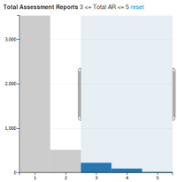 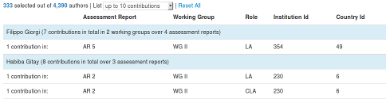 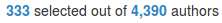
Initially, the only hint that the bar chart is interactive is the shape of the cursor which changes to a cross on hover. After starting a selection, a text appears above the chart which describes the current range of values, and helps to understand and to refine the selection process.
Once familiar with the way of defining a range of values however, it is straightforward to select authors who contributed to more than 2, 3, 4 or 5 assessment reports. The other charts and the table with the list of authors get updated on the fly, as well as the number of authors currently selected, displayed on top of the list.
The table lists both authors and their collaborations. The collaborations are listed as individual records, grouped under a header with the name of the author and some statistics: total number of contributions, of working groups and of assessment reports. Each of these values is only displayed when greater than 1, which reduces the amount of information displayed in the most common cases.
The number of records displayed in the table must be limited to keep the page responsive. The duration required to refresh the table increases exponentially With the number of records, freezing the display completely when a large number of authors and contributions are selected. This limit can be configured through a list: only 10 contributions are displayed initially to keep the page responsive while filtering data; the user can change this value to display more records or the full list at a later point.
Who are the authors that have participated in more than 1, 2, 3, or 4 assessment reports while holding at least 1 of the 3 elected roles in the IPCC in each assessment report of participation (Coordinating Lead Author, Lead Author, Review Editor)?
-
Answer using dc.js and crossfilter.js
The Distinct Roles pie charts depicts the proportion of authors holding each role in the range of Total Assessment Reports currently selected in the bar chart. The subset of authors holding a role of responsibility can be selected by clicking each role in the pie chart in turn: CLA for Coordinating Lead Author, LA for Lead Author, RE for Review Editor, leaving the last sector unselected.
Alternatively, the three roles of responsibility can be selected at once by clicking the Yes part of the Roles of Responsibility chart.
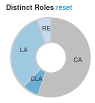 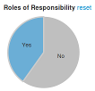
Who are the authors that have participated in more than one working group (what we call bridge authors)?
-
Answer using dc.js and crossfilter.js
The row chart Cumulated Working Groups partitions authors according to the complete set of working groups to which they contributed. The rows labeled "WG I", "WG II" and "WG III" show the authors who contributed to a single group. The remaining rows correspond to the bridge authors which contributed to more than one working group: "WG I+II", "WG I+III", "WG II+III", "WG I+II+III".
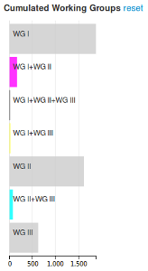
Using Cumulated Working Groups avoids the confusion of authors that belong to multiple working groups. However, another confusion arises: to select all the authors who contributed to a working group, 3 different rows must be select; it is not enough to select WG I, for example, WG I+II and WG I+II+III must be selected as well.
The dynamic range of values introduces another challenge: when groups with over 1000 authors are represented on the same chart as groups with only 10 or 15 authors, the rows for the smallest groups are hardly visible which makes it hard to click on the rows to select these groups and to identify the current color of these groups to check whether they are selected or not. This issue tends to worsen with filters applied through different charts, which further reduce the number of authors displayed and thus the length of the rows.
-
Answer using the IPCC Tool
No filter allows to select only bridge authors in version V0 of the IPCC Tool, but they can be seen as separate dots in the default visualization, grouping authors by Working Groups, which shows circular groups corresponding to different Cumulated Working Groups. Bridge authors are represented as dots in the following colors: yellow for WG I+II, magenta for WG I + III, cyan for WG II+III, black for WG I+II+III.
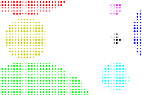
Are there particular chapters of the IPCC where these bridge authors tend to aggregate (i.e. around particular themes)?
What kind of roles do the authors who participate in more than one working group occupy?
-
Answer using dc.js and crossfilter.js
After resetting all filters to select only bridge authors in the row chart "Cumulated Working Groups" as described in question 3, the pie chart "Distinct Roles" shows the proportion of authors with each role among bridge authors.
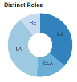
The depiction of roles on pie charts is misleading: the authors who endorse a different role for different contributions belong to more than one section. While the area of a section is still proportional to the percentage of authors with a given role, these percentages do not add up to a total of 100%. To provide a more accurate representation, the sections should overlap, which would still be confusing visually.
-
Answer using the IPCC Tool
The roles of bridge authors can only be seen separately by selecting each role in turn in the list that displays "Any Role" initially, while keeping the default grouping criterion "by Working Groups". Bridge authors are represented as colored dots, as described in question 3.
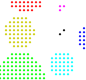 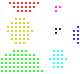 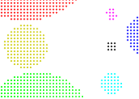
How does the geographic diversity of IPCC authors change over time? Is there a rise over time in participation of authors, for example, from South America compared to Asia?
-
Answer using the IPCC Tool
The visualization obtained by grouping "by Country" reflects the geographic diversity of authors. The evolution over time can be seen by selecting each assessment report in turn in the list that displays "Any AR" initially.
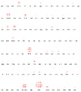 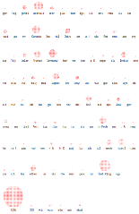 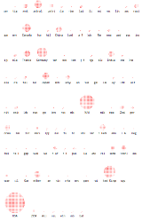 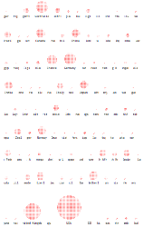
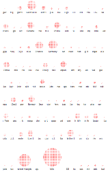
Are certain types of institutions more affiliated with particular countries than others?
Which Least Developed Countries are the most present in the IPCC? In which working groups?
In which chapters do authors from Africa participate in? Is there variation between African country participation?
What is the ratio of African Coordinating Lead Authors vs Lead Authors vs Review Editors vs Contributing Authors?
-
Answer using the IPCC Tool
This ratio can be seen in the visualization of authors grouped "by Role in each Country Aggregation". The group labeled "AG" corresponds to authors affiliated with institutions located in a country part of the "African Group".
In this visualization, each role is represented with a different color, cyan for CLA (Contributing Lead Authors), blue for LA (Lead Authors), Green for RE (Review Editors), red for CA (Contributing Authors), while authors with multiple roles are shown in black.
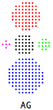
What are the individual trajectories of those authors that have participated in over 14 chapters in the IPCC? How do these trajectories compare? Are there similar trends in terms of roles held; country of affiliation; etc?
-
Answer using the IPCC Tool
The list with the initial value "1 contribution" lists the number of authors for each total number of contributions. There is no entry for 14 contributions, the next entry, for 15 contributions or more, selects only 4 authors.
With this selection, grouping "by Working Group (WG) in each Assessment Report (AR)" shows the trajectory of these authors over time, however not the individual trajectory in version V0 of the IPCC Tool.
The roles held by selected authors can be seen by grouping these authors "by Role in each Assessment Report (AR)" and their countries of affiliation can be seen by grouping the authors "by Country".
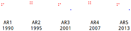 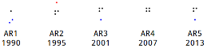 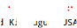
Where are French authors on the IPCC? To which chapters do they contribute the most?
-
Answer using the IPCC Tool
Authors affiliated with an institution located in France can be selected by picking "France" in the list which displays "Any Country" initially.
These authors are not necessarily French, since all authors working at French branches of international institutions such as the OECD (Organization for Economic Cooperation and Development) or the World Bank are included in this selection.
There is no visualization of contributions per chapter in version V0 of the IPCC Tool; the closest grouping is the default grouping by Working Group.
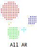